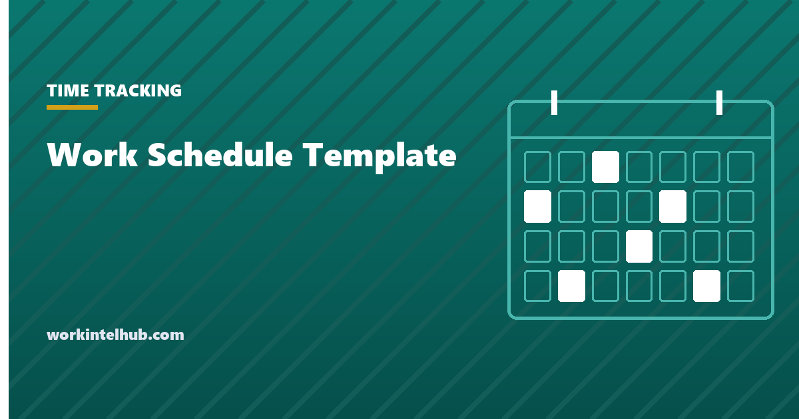

Work Schedule Template

A work schedule template is a grid of employees against days, with each cell holding a shift or a day off, and two totals that most templates leave out: whether every shift has enough people, and whether anyone is heading past 40 hours.
The builder below keeps both totals live as you fill it, and can fill the week itself, fairly, from each person's maximum hours. The sections after it cover how to build a schedule that survives the week, the notice laws that apply in some cities, and what to do about the requests that arrive after it is published.
Build the week
Click a cell to cycle it through the shifts and off. Each shift is counted as 8 hours. The coverage row shows where a shift is short, and the hours column shows who is heading over 40. Saved in this browser.
How to make a schedule that holds
- Start from demand, not from people. Forecasting demand is the first of the five workforce management processes. How many are needed on each shift, each day? That number is the "people needed" field, and it changes by day in most businesses. Set it for the busiest day and adjust down cell by cell.
- Collect availability first. A schedule built without it is a draft that gets rewritten in swaps. The availability form is the input.
- Fix the constraints before the preferences. Maximum hours, minimum rest between shifts, certifications a shift needs, students' class times. Then preferences.
- Spread the unpopular shifts. Closing, weekends and nights rotate, or the people who always get them leave. The auto-fill balances hours, not desirability; that part is judgement.
- Publish two weeks ahead. It is the law in some places, below, and it is what makes swaps possible everywhere else.
- Leave a named on-call. One person per day who has agreed to be asked first, rather than a group text to everyone.
Notice laws that constrain the schedule
Oregon, and a group of cities including New York, San Francisco, Seattle, Chicago, Philadelphia and Los Angeles, have predictive scheduling or fair workweek laws for larger employers in retail, food service and hospitality. The common shape: schedules published 14 days ahead (72 hours for New York City retail), premium pay when the employer changes a published shift, a right to decline hours added at short notice, and minimum rest between closing and opening shifts. Coverage thresholds are typically 20 to 500 employees depending on the jurisdiction, so check yours.
Even where none applies, the rules are a reasonable description of what a fair schedule looks like. And once the schedule is worked, the hours that matter are the ones on the time record: the attendance policy covers what happens when they differ, and the time card calculator covers the arithmetic.
Handling changes after publication
- Swaps between employees are approved if both are qualified for the shift and neither goes over their maximum. Write that rule down and most swaps need no manager.
- Employer-initiated changes are the ones notice laws penalise. Where they are lawful, they are still the thing that erodes trust fastest; a schedule that changes every week trains people to ignore it.
- Absences go to the named on-call, then to volunteers, then to the people with the fewest hours that week. The schedule builder's hours column is the list.
- Overtime is a cost decision. A 44-hour week for one person is usually cheaper than an uncovered shift, but it is a decision to make on purpose. For 24-hour operations the pattern is better set at the rota level; our rotating shift schedules page covers those.
Key takeaways
- A schedule is a grid of people against days with two live totals: coverage per shift and hours per person.
- Start from demand, collect availability first, fix constraints before preferences, and rotate the unpopular shifts.
- Publish two weeks ahead. Oregon and about ten cities require it for retail, food and hospitality, with premium pay for changes.
- Write the swap rule down: both qualified, neither over maximum, no manager needed.
- Absences go to a named on-call, then volunteers, then whoever has the fewest hours. Overtime to cover a gap is a deliberate cost decision.
Frequently asked questions
How do I make a weekly work schedule?
Decide how many people each shift needs on each day, collect everyone's availability, enter their maximum hours, and fill the grid so every shift meets its number without anyone exceeding their maximum. The builder above does the fill automatically and shows the gaps and the overtime as you adjust it.
How far in advance should a work schedule be posted?
Two weeks is the standard, and it is a legal requirement for covered employers under Oregon's law and the fair workweek ordinances in cities including New York, San Francisco, Seattle, Chicago, Philadelphia and Los Angeles. Shorter notice where those apply triggers premium pay.
What should a work schedule template include?
Employee names, each day of the week with dates, the shift assigned or a day off, the hours per person, and the coverage per shift against the number needed. Contact details for swaps and the named on-call for each day are worth adding.
Can an employer change the schedule after posting it?
Generally yes, but in predictive scheduling jurisdictions changes to a published schedule carry premium pay and employees can decline added hours. Everywhere, frequent changes are the fastest way to make a schedule ignored, so they should be rare and explained.
How do I handle shift swaps?
Set a rule that swaps are approved automatically when both employees are qualified for the shift and neither exceeds their maximum hours, and require both to confirm in writing. That removes the manager from most swaps and keeps the record straight for payroll.